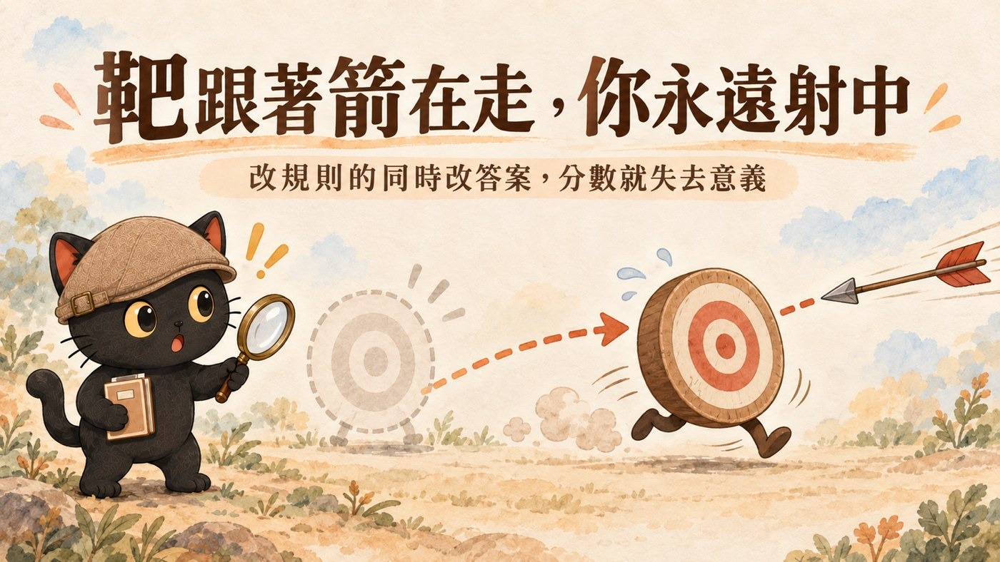
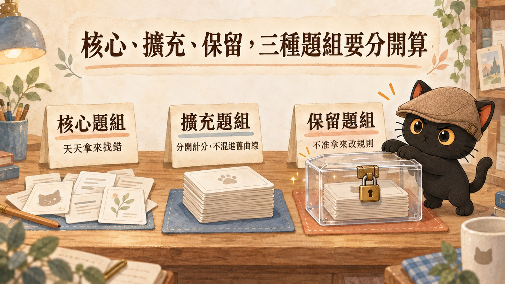

這篇在講什麼
新模型出來我也會想試一下。問題是試完之後，我通常只能說「感覺比較聰明」，講不出證據。想認真比一下，又會發現上次測完之後規則改過、標準答案也改過，兩次的分數根本不能放在一起。
我幫一個扶輪社做了「LINE 群訊息自動整理成活動看板」的系統。為了知道它準不準，我取了八天、138 則群訊息當考卷，人工標好答案，請 AI 整理，再對分數。
我改了兩版規則，分數一分沒動，兩次都是 29 分。後來我把其中一題的標準答案改掉，拿同一份舊輸出重算，分數變成 36。系統一個字都沒改，漲了七分。
這篇講我怎麼把考題凍結起來，讓「換模型、換規則、換平台」之後跑出來的分數，真的可以放在一起比。
分數可比只是前提。 如果你的題目全部都有標準答案，換上更強的模型，分數多半不會動，因為那些題強弱模型都答得出來。真正的差別出現在沒有標準答案的地方，所以考卷裡要刻意留一塊不打分的空間。
・你在用 AI 做一件會長期跑下去的事（整理訊息、分類資料、客服回覆、報告生成），每隔一陣子想知道「現在到底有沒有比上個月好」
・新模型出來你都會去試一下，但試完只留下「感覺比較聰明」這種印象，講不出證據
・你要幫客戶評估「該用哪個模型」「該不該換平台」，需要拿得出數字，而不是拿體感去說服人
・你已經在做 AI 測試，但每次改完流程就順手把答案也改了，心裡隱約覺得哪裡怪
・一個判斷：新模型出來要不要換，什麼情況下你的分數答得了這題，什麼情況下它只是自我感覺
・一套三層結構，把「題目」「標準答案」「每次成績」分開放，改一層不會污染另外兩層
・三種題型的配法：必抓題與陷阱題讓機器算分，再留一批不打分的延伸題，那批才看得出新模型強在哪
・一份凍結清單，列出換平台時必須一起帶走的東西，少帶一項分數就不能比
・一個五步起步法加一張可以照抄的成績表，不用寫程式，今天就能做完第一版
- 一個群八天的訊息，我拿它當考卷
- 規則改了兩版，分數一分沒動
- 我沒動系統，只改一題答案，分數就從 29 變 36
- 為什麼 AI 的測試特別容易自己騙自己
- 把考題、答案、成績分成三層
- 出題的時候，就決定了你能測到什麼
- 核心、擴充與保留，三種題組要分開計分
- 換平台之前要先凍結的七樣東西
- 我的考卷長什麼樣子
- 固定考題這套做法，我做到哪、還沒做到哪
- 今天就能開始：從你最近踩的坑各寫一題
只想直接動手的，從第 11 段開始看就好，那一段不用寫程式。
一個群八天的訊息，我拿它當考卷
我在做一個給扶輪社用的活動看板。社友在 LINE 群裡公告例會、貼報名接龍、傳活動照片、講參加心得，全部混在同一條時間線上。系統要做的事，是自動把這些訊息整理成一張一張活動卡：哪天、幾點、在哪、誰報名、當天的照片、事後的心得。
這件事聽起來單純，實際上群組訊息非常混亂。同一場活動會被講五次，每次補一點新資訊。有人在下午三點貼「改到 B 棟」，那句話沒有提到是哪場活動。有人把心得跟公告寫在同一則。有人轉貼別的社團的活動，那不是我們的活動，但長得一模一樣。
為了知道系統準不準，我從群裡取了連續八天、138 則訊息當作考卷，把裡面的手機號碼遮掉，自己人工標出正確答案，然後請 AI 整理，再拿它的輸出跟我的答案對。
那份考卷有 19 個評分項，滿分 38 分。我跑了兩次，用的是兩個不同版本的規則。兩次都是 29 分。
規則改了兩版，分數一分沒動
第一次跑完 29 分，我去看錯在哪，回頭改了規則。改完再跑，還是 29 分。
如果只看分數，結論會是「改了等於沒改」。
但我把兩份輸出逐行對了一次，發現行為其實變了四個地方：
| 項目 | 舊版規則 | 新版規則 | 判定 |
|---|---|---|---|
| 某場工作坊的時間欄 | 填了「14:00-」，但原文沒寫時間 | 留空 | 新版對，它不再腦補 |
| 那場的備註欄 | 多一句原文沒有的「可單獨參加」 | 只留原文有的 | 新版對 |
| 那場的費用欄 | 沒抓到 | 抓到「每人 300 元材料費」，原文確實有 | 新版對 |
| 11/28 那場 | 當成一場 | 拆成兩場（下午參訪、晚上社慶） | 待議，見下一段 |
三個地方變好了，一個地方變得跟以前不一樣。分數完全沒反應。
原因是這四個地方在這份考卷上剛好都不計分。只看總分的測試，看得見的只有淨差，看不見行為變化，也看不見一進一退互相抵銷。
這是第一個教訓：分數一樣不等於沒變。真的想知道改了什麼，要留下每一次的原始輸出，回頭逐行對。
我沒動系統，只改一題答案，分數就從 29 變 36
第二個教訓來自考卷裡最難判的那一題。
某天上午開例會，下午接著一場香氛工作坊。同一天、同一個場地的延續、同一批人，表面上每一個特徵都指向「這是一場活動」。
所以我把它設成陷阱題：AI 如果拆成兩張卡就是多抓，扣五分。AI 跑出來真的拆成了兩張，所以被扣了五分。
後來我把這題拿去問業主本人。他看完說：這是兩場，要兩張卡。理由很具體：群裡有人直接問過「可以邀朋友只參加下午那場嗎」，得到的回答是可以；下午那場另外收三百元材料費，跟例會分開；它有自己的報名表單。
時間、地點、人都連在一起，但以主題來說，它是兩場。
這題留在考卷裡很有價值，因為「一場還是兩場」正是這類系統最容易判錯的地方。同一份考卷上的 11/28 那場，舊版規則當成一場、新版規則拆成兩場，前後自己都不一致。
判準拍板之後，這題從「陷阱題，踩到扣五分」改成「必抓題，抓到加兩分」，一減一加，差額是七分。然後拿同一份舊輸出重算：
| 跑第幾次 | 用哪版規則 | 用哪版答案 | 分數 |
|---|---|---|---|
| 第一次 | 舊版規則 | 舊版答案 | 29 |
| 第二次 | 新版規則 | 舊版答案 | 29 |
| 重算（沒有重跑） | 第一次那份輸出，一個字沒改 | 新版答案 | 36 |
系統進步了幾分？零分。
那七分完全來自判準改了。如果我當時沒有停下來看改動紀錄，就會把「規則升版，分數 29 → 36」寫進工作日誌，而那句話是假的。

- 改完規則，怎麼知道 AI 到底有沒有變乖？
這一段只講「我自己把答案改掉了」這個坑，那篇講的是前一層：改完一條規則之後，怎麼設計一組回歸題目，把原本要觀察一個禮拜的事壓成五分鐘。先有那篇的題組，才會遇到這篇的問題。
為什麼 AI 的測試特別容易自己騙自己
這類測試天生有三個結構性問題，不設計就一定會發生。
模型、規則、平台同時在變，分數沒辦法歸因
改程式碼的時候，通常只有程式碼在變。你改一行、跑一次測試、紅變綠，因果關係很清楚。
AI 系統不是這樣。同一個禮拜裡面，通常至少有三樣東西在動：
| 在變的東西 | 例子 |
|---|---|
| 模型 | 新版本出來了、換一家試試、把推理強度從高調到低 |
| 你的規則或提示詞 | 加了一條「遇到這種情況要這樣判斷」 |
| 平台與接法 | 從這個雲端服務換到那個、換了 API、換了一層中介工具 |
三樣一起動，分數升了你也不知道該謝誰。更糟的是分數掉了，你不知道要退哪一步。
標準答案本身也是會變的東西
一般人講「固定考題」，想的是「題目不要換」。但在 AI 這種判斷型任務裡，題目固定不等於答案固定。同一份訊息、同一個問題，隨著你對業務的理解變深、隨著業主拍板某個判準，正確答案是會改的。
前面那個香氛工作坊就是。訊息一個字沒變，正確答案翻了一面。
答案會變不是問題，那代表你越來越懂這件事。問題是答案變了以後，前後兩次的分數就不能直接比，而系統不會主動提醒你這件事。
還有更往前一步的：有些題目根本不該替它定標準答案，這件事單獨放在出題的時候，就決定了你能測到什麼那一段講。
生成式模型本來就有波動，單次分數不能當定論
同一份題目、同一個模型、同樣的設定，跑兩次也可能得到不一樣的輸出。
所以 36 分對 35 分，很可能不是退步，只是這次剛好。單次分數只能當一個樣本，要判斷真的有差，同一個設定至少要重跑幾次，看中位數跟最低分，不是看最好的那一次。
- 如何讓兩個不同的 AI 互相挑錯、自己訂正？
這一段只講為什麼一個人、一個模型測自己會失真，那篇是我目前的解法：兩個不同家的 AI 各自互盲跑完再交換挑錯，不讓後跑的那個被前一個的想法帶著走。前面那題香氛工作坊的判準，就是這樣被翻出來的。
把考題、答案、成績分成三層
「不准改答案」並不切實際。做法是把原本混在一起的三件事拆開放，各自有各自的版本。
| 層 | 放什麼 | 什麼時候可以改 | 改了會怎樣 |
|---|---|---|---|
| 題目層 | 原始訊息、順序、時間；去識別處理要在凍結之前做完 | 凍結之後不再改 | 改了就是另一份考卷，舊分數仍然保留當紀錄，但不可以跟新版直接比 |
| 判準層 | 標準答案、每題幾分、什麼算對 | 可以改，但每次改要升版本、寫理由 | 改了要同時保留「當時公布的分數」與「用新答案重算的分數」 |
| 跑分層 | 每一次的實際輸出全文、得分、當時的環境 | 只新增，不修改 | 每筆都要標明用的是哪一版題目、哪一版答案 |
這樣拆開之後，前面那件事會被誠實地記成三行，而不是一句「29 → 36」。
要特別強調跑分層的「輸出全文」。只存分數不存原文，等於把重算的能力丟掉。 我能發現那七分是假的，就是因為第一次的原始輸出還在，可以拿新答案重算一次。
出題的時候，就決定了你能測到什麼
三層解決的是「分數可不可比」。可比是前提，但光有它，還答不了這篇標題那個問題。
因為分數可比之後，你會撞到下一件事：換了更強的模型，分數常常不動。
原因不在模型，在題目。
有標準答案的那兩種題，強模型弱模型都答得出來
我那份考卷目前只有兩種題，兩種都有標準答案：
| 題型 | 在測什麼 | 怎麼算分 |
|---|---|---|
| 必抓題 | 這幾件事一定要抓出來 | 抓到加分 |
| 陷阱題 | 看起來很像該處理，正確做法是不要動它 | 忍住得分，動了倒扣 |
這兩種的好處是機器就能算分，不需要人來判斷。這也是為什麼大部分人的考題只有這兩種。
問題是必抓題太好答了。我那份考卷 19 個評分項，目前拿滿 18 項，唯一沒拿到的兩分還是一題「沒抓到也不扣分」的加分題（完整的配分表在我的考卷長什麼樣子那段）。這種考卷換上更強的模型，分數最多從 36 變成 38。
模型可能真的變強了。是這份考卷測不出它強在哪。
把答案寫死，比你聰明的回答會被判成錯
以後會出現比你聰明的模型，它會給出你當初沒想到的答案。而你的標準答案是照你當初的理解寫的，那種答案只會被判成錯，而且是機器自動算出來的，不會有任何人覺得奇怪。
前面那題香氛工作坊就是這樣。我的答案寫「算一場」，AI 拆成兩場，被扣了五分。後來業主拍板，它拆得對。
這題會被翻出來，是因為我剛好拿去問了人。如果我沒問，那個判斷就永遠停在「AI 答錯了」。
這代表固定考題有一個內建的天花板：一份題目全部寫死答案的考卷，它的滿分就是「跟我當初想的一樣」。 而那正好是你不需要換模型的理由。
第三種題：沒有標準答案，也不打分
解法是留一塊空間出來，專門放那種你答不出標準答案的題。
這種題我不寫答案，也不計分。我只做兩件事：問，然後把回答原封不動存下來。問法像這樣：
怎麼用它：換模型的時候，把新舊兩邊的回答並排讀一次。 不需要評分規則，你讀完就知道哪一個比較像你想要的那個同事。
| 必抓題與陷阱題 | 沒有標準答案的延伸題 | |
|---|---|---|
| 有沒有標準答案 | 有 | 沒有 |
| 誰來評 | 機器算分 | 你自己讀 |
| 測的是 | 它有沒有照你的意思做 | 它有沒有做得比你想的更好 |
| 換模型的時候 | 分數常常不動 | 差別通常出現在這裡 |
前兩種題防止它退步，第三種題留空間給它超過你。 兩邊都要有，這份考卷才答得了「新模型對我的工作是不是真的比較好」。
核心、擴充與保留，三種題組要分開計分
先把兩個「三」分清楚：上一段分的是「這題有沒有標準答案」，這一段分的是「這題能不能拿來改規則」。 兩個是不同的軸，同一題會同時有兩個身分，例如一題必抓題，同時屬於核心題組。
這一層是跨家審稿時，另一個模型補上的。
如果你每次踩到新的坑就往同一份考卷加題目，那份考卷會越長越大，而新題目不能接到舊曲線上。上個月 36/38 跟這個月 36/45，中間那七分是新加的題，兩個數字放在一起比毫無意義。
所以題組要分三種，各自獨立計分：
| 題組 | 做什麼用 | 可不可以拿來改規則 |
|---|---|---|
| 核心題組 | 第一版就定下來的那批，永久封存，每次都跑，是唯一能拿來看長期趨勢的東西 | 可以。你會一直看它的錯誤、一直補規則 |
| 擴充題組 | 每遇到一種新的混亂就新增一組 | 可以，但不併進核心題組的分數 |
| 保留題組 | 從頭到尾沒被拿來改過規則的題目 | 不可以。只在要驗收「到底有沒有真的變強」的時候跑 |

第三種是整套裡最重要、也最容易被省掉的。
因為你一直針對同一份考卷補規則，遲早會補出一套「只對這 138 則訊息特別好」的規則。那不叫變聰明，那叫把答案背起來。核心題組每天被你拿來找錯，它早就不是「沒看過的題目」了，用它來宣稱系統變強是不成立的。
- 怎麼設計讓兩個 AI 互審？
這一段只講互審幫我補上了「保留題組」這一層，那篇把互審本身拆成三種程度：什麼時候只要一句話請對方看一眼，什麼時候要兩家獨立跑完再比對。這篇能抓到自己的盲點，就是走了那套流程。
換平台之前要先凍結的七樣東西
固定考題這件事，真正的考驗在換平台的時候。
我現在的系統跑在 Cloudflare 上。以後可能換別家、可能換成本機跑。如果換過去之後分數掉了三分，我要有辦法知道是平台害的，還是別的東西跟著變了。
要做到這件事，跑一次分數的時候，這七樣東西必須全部記下來：
| 要凍結的 | 為什麼 |
|---|---|
| 訊息內容、順序、時區 | 少一則、順序換了、時區差八小時，答案就不一樣 |
| 完整的規則版本與提示詞 | 規則差一句話，行為就差很多 |
| 輸出格式的規格 | 欄位名變了，評分程式會抓不到，分數會憑空掉 |
| 完整的模型代號與推理強度 | 「用 GPT」不算，要精確到版本號跟推理強度設定 |
| 前處理與重試規則 | 失敗重試幾次、超時多久，都會影響結果 |
| 評分程式的版本 | 評分程式改了，等於尺換了 |
| 那一次的原始輸出全文 | 沒有原文，以後想用新答案重算就辦不到 |
如果你不是自己寫程式接 API，這張表看起來會很嚇人。實際上你只要顧好第一項（題目）、第二項（那段固定指令）跟第四項（模型跟推理強度，在 ChatGPT 或 Claude 的介面上就是你選的那個模型名字）。中間那三項是給自己接系統的人看的。
這七項是「盡量可重現」，不是「保證可重現」。 雲端模型會在你不知道的時候更新，取樣設定、系統提示詞、工具與資料來源也都可能有差異。凍結清單能做到的是：分數變了的時候，你手上有七個可以一項一項排除的嫌疑犯，而不是完全無從查起。
另外一個容易踩的坑：要分清楚你在測「模型的能力」還是「整套系統的表現」。同一份考卷，直接丟給模型跑，跟經過你的系統（有前處理、有重試、有格式檢查）跑，分數會不一樣。兩條線要分開記，不然換平台的時候你會把系統的問題算到模型頭上。
我的考卷長什麼樣子：138 則訊息，19 個評分項，滿分 38
這是我目前在用的那份。
題目：連續八天、138 則群訊息，存成一個檔案。手機號碼已經遮掉。時間戳保留原樣。
評分項 19 個，滿分 38 分：
| 類別 | 在測什麼 | 題數 × 配分 | 小計 |
|---|---|---|---|
| 必抓 | 這十場活動一定要抓到 | 10 題 × 2 分 | 20 |
| 加分 | 一個抓到更好、沒抓到不扣分的邊緣案例 | 1 題 × 2 分 | 2 |
| 陷阱 | 「社長的話」是心得不是活動；別的社團的例會不是我們的 | 2 題 × 2 分（踩到倒扣 5 分） | 4 |
| 投票 | 群裡的時段投票要收進投票區，不可以當成活動 | 1 題 × 3 分 | 3 |
| 歸屬 | 某天貼的心得講的是前一天的事，不可以歸給當天的活動 | 1 題 × 3 分 | 3 |
| 分類 | 有沒有分出現場回報、進度更新、心得回饋 | 3 題 × 1 分 | 3 |
| 完整度 | 138 則有沒有全部讀完 | 1 題 × 3 分 | 3 |
| 19 項 | 38 |
目前成績：用 GPT-5.6 Sol、推理強度 low，兩個規則版本都是 36 分。
那沒拿到的兩分，全部是加分題那一題：一場外縣市參訪，AI 沒抓到。它的規則是「抓到加兩分，沒抓到不扣分」，所以不是被扣分，是那兩分沒拿到。其餘 18 項全部拿滿。
最有價值的是陷阱題跟歸屬題。必抓題其實不難，模型多半抓得到。真正分得出高下的是「不該抓的有沒有忍住」跟「模稜兩可的有沒有歸對」。
這張表也讓那個天花板很具體：19 項裡 18 項已經拿滿，就算換上更強的模型，這份考卷最多只能從 36 變成 38。前面講的延伸題這份考卷還沒有，所以它目前量得出「有沒有退步」，量不出「有沒有比我想的更好」。
十二種混亂目前只有標籤，還沒變成考題
我現在在做的下一步，是把「群組訊息會出現的混亂」整理成一份清單，每一種各自準備一組題。目前列出來的有十二種：
這份清單現在就只是十二個標籤，還不能拿來跑分。 每一種要變成題目，需要補四樣東西：具體的訊息樣本、預期的正確輸出、絕對不可接受的輸出、判斷依據。少了這四樣，它是一句話，不是考題。
固定考題這套做法，我做到哪、還沒做到哪
分成三欄講清楚：
138 則的核心題組、標準答案檔、評分程式、每次跑完留原始輸出
版本比對、行為差異的逐行檢查、改答案之後的重算
沒有標準答案的延伸題、保留題組、十二種混亂的擴充題組、分數對應到「幾分可以上線、幾分要回滾」的門檻
另外四個限制，也一起講：
第一，我的標準答案是單人判讀的。這 138 則的答案裡，只有香氛工作坊那題經過業主本人拍板，其餘都是我一個人標的，沒有第二個人複核。其中兩題後來因為業主拍板而改了方向。
第二，樣本很小。八天、138 則、一個群。這個分數能用來比較版本之間的差異，不能當成「這個模型整體有多強」的結論，更不能拿來宣稱整套服務有多準。
第三，過擬合的風險真實存在。我一直針對這份考卷補規則，補到後來規則會越來越貼合這 138 則訊息。保留題組就是為了擋這件事，而它還沒做。
第四，分數沒有對應到決策門檻。36 分可以上線嗎？33 分要不要回滾？如果沒有事先說好幾分代表什麼，跑分就只是一個好看的數字，不會影響任何決定。
在門檻定出來之前，我用一個暫行做法頂著：每次要跑分之前，先寫下這一次要幫我決定什麼。 是「要不要換成這個新模型」，還是「規則這樣改有沒有弄壞舊的」。問題先寫死，跑完至少知道這個數字該回答誰。這不能取代門檻，但至少不會跑完一堆分數，沒有一個影響到任何決定。
今天就能開始：從你最近踩的坑各寫一題
如果你手上也有一個長期在跑的 AI 流程，這是我建議的最小起步。不需要寫程式，用試算表跟資料夾就能做完。
第一步，先做去識別，再凍結。 翻最近一個月的紀錄，找出實際發生過的案例。把原始輸入複製一份，遮掉姓名、電話、地址、客戶機密，之後就不要再動它。遮的動作要在凍結之前做完，凍結之後改任何一個字，前後分數就不能比了。
第二步，選題目不要只選做錯的。 至少要有三種：
| 題型 | 為什麼要有 |
|---|---|
| 做錯過的（2 到 3 題） | 這是你最在意的行為，改完要能驗證 |
| 本來就做對的（至少 1 題） | 防止你改規則把原本好的弄壞 |
| 不該做任何事的（至少 1 題） | 測「該忍住的有沒有忍住」，這題通常最能分出高下 |
| 沒有標準答案的（至少 2 題） | 你自己也答不出標準答案的那種問題。不打分，只存回答。換模型的差別會出現在這裡 |
第三步，前三種題各寫三件事：正確答案是什麼、什麼樣的輸出絕對不可接受、這題幾分。第四種不寫答案也不配分，只要把問題寫死，之後每次都問同一句。
第二項比第一項重要。正確答案可能有好幾種寫法，但「絕對不行的」通常很明確，比較好判斷。配分怎麼給沒有標準，我的做法是一般題 2 分、真的很在意的題 3 分、踩到紅線倒扣。重點不是配分合不合理，是配分一旦定了就不要動。
第四步，把「指令」也凍結。 開一個資料夾，裡面放三樣東西：題目檔、你每次要貼給 AI 的那段固定指令、你要求的輸出格式。每次測試就是把同一段指令配同一份題目貼進去，不要每次憑手感重打一次，那樣你測的是你的手感，不是模型。
第五步，開一張成績表，每次跑完記六欄。 可以直接照抄這張：
| 日期 | 模型與推理強度 | 規則版本 | 答案版本 | 得分 | 原始輸出存在哪 |
|---|---|---|---|---|---|
| 09/18 | GPT-5.6 Sol / low | v6 | v2 | 29 | results/0918-v6.txt |
| 09/19 | GPT-5.6 Sol / low | v7 | v2 | 29 | results/0919-v7.txt |
| 09/20 | 同上（重算，未重跑） | v6 | v3 | 36 | 同 0918-v6.txt |
最後一欄如果你是在 ChatGPT 或 Claude 的對話框裡測，就把 AI 那次的回答整段複製，貼進一個文字檔，檔名寫上日期跟版本（例如 0918-v6.txt），跟題目放同一個資料夾。這一欄最常被省掉，也是最不能省的，沒有它你就永遠沒辦法拿新答案重算。
第三列就是我那次的紀錄。重算要單獨記一列，而且標明沒有重跑，不然它會偽裝成一次進步。
延伸題不進這張表，因為它沒有分數。它跟原始輸出放一起就好，檔名同樣帶日期跟版本（例如 0918-v6-延伸.txt）。換模型那次，把新舊兩個延伸檔並排打開讀一遍，那是這整套裡唯一回答得了「新的比較好嗎」的動作。
最後一條規則：一次只改一個東西。 要換模型就不要同時改規則，要改規則就不要同時換平台。同一個設定最好跑兩三次看看波動多大，再決定分數差多少才算真的有差。
做完這五步，你有的是一個基準點，還不是曲線。要等下一次用同一份考卷再跑一次，才有第二個點可以連起來。
- 模型不是越聰明越好：我開始學著算 AI 的 CP 值
這一段只講怎麼把分數量出來，那篇講量出來之後怎麼用：同樣一件事，貴的模型多拿幾分值不值得那個價差。兩篇合起來才是完整的選型判斷。
這套固定考題方法，目前用在萊卡的活動看板上
前面講的那個扶輪社活動看板，是我的 LINE 群訊息整理服務「萊卡」的其中一個情境。
萊卡在做的事，是把 LINE 群裡散落的公告、接龍、照片、心得，自動整理成一張一張看得懂的活動卡，包含報名名單、現場照片、事後心得，還有結案報告。社團、班級、協會、讀書會這類「訊息量大但沒有人有空整理」的群組，是它主要的使用情境。
服務說明、五種使用情境與實際做出來的看板長什麼樣子，都放在這裡。
我把它寫出來，一部分原因是這個：我拿去賣的東西，我自己要有辦法說出它準不準、憑什麼說準，還有哪裡還沒驗證。 如果我只能說「用了 AI，很聰明」，那跟沒說一樣。
- 這篇提到過的
- 改完規則，怎麼知道 AI 到底有沒有變乖？：回歸題組怎麼設計，把一個禮拜的觀察壓成五分鐘。
- 怎麼設計讓兩個 AI 互審？：三種程度的互審機制，這篇的盲點就是這樣被抓出來的。
- 如何讓兩個不同的 AI 互相挑錯、自己訂正？：兩家 AI 互盲跑完再互審，避免自己審自己。
- 模型不是越聰明越好：我開始學著算 AI 的 CP 值：分數量出來之後，怎麼跟價差一起算。
- 再往前後延伸
- 讓 AI 定時整理資料前，先決定它多久醒一次：同一個扶輪社專案的另一面，把每月 400 美金的成本壓到台幣 76 元。
- 規則檔越寫越長，AI 有照做嗎？：你寫的規則大部分沒在執行，這是「為什麼要測」的前一題。
我是江江教練
隱性知識提煉師、AI 應用規劃師。我把自己每天在用的 AI 工作流程寫成文章與技能包，讓不會寫程式的人也能照著做。
如果你正在建自己的 AI 流程，想知道下一步該做什麼，歡迎來社群聊。
AI × 知識管理、隱性知識提煉，免費線上講座的場次也會先在這裡公布。